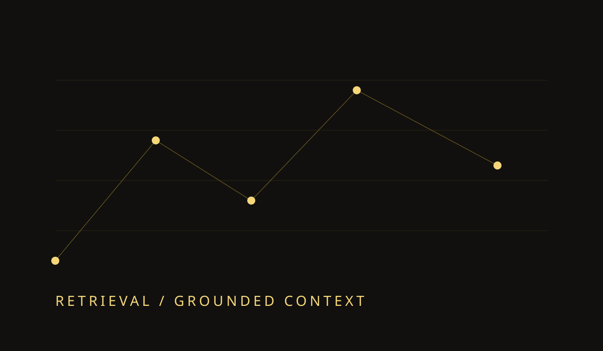

LLMs & RAG · 2026-10-27 · 5 minBuilding RAG Systems That Stay Useful
Retrieval quality, grounded answers, and the small product decisions that make a RAG assistant genuinely useful.
Read more
LLMs & RAG · 2026-10-27 · 5 minRetrieval quality, grounded answers, and the small product decisions that make a RAG assistant genuinely useful.
Read more Agentic AI · 2026-10-27 · 4 min
Agentic AI · 2026-10-27 · 4 minA practical way to decide when a deterministic workflow should become an agentic system.
Read more